복잡한 광고와 불필요한 기능은 덜어내고, 소중한 전통의 결을 정갈하게 채웠습니다.
어르신도 돋보기 없이 편안한 큰 글씨, 손 없는 날과 24절기, 부모님 음력 생신 자동 계산, 그리고 책상 위 감성 탁상달력까지 함께하세요.
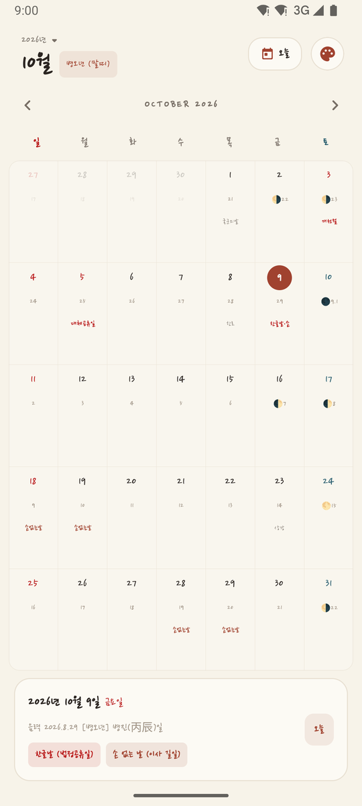
불필요한 기능으로 무거운 달력 대신, 우리 삶에 꼭 필요한 전통 지혜와 편의를 담았습니다.
정확한 천문학적 윤달 계산과 100년 음력 데이터, 매일의 육십간지 일진(日辰)까지 완벽 지원합니다.
악귀가 없는 길일을 달력에 한눈에 띄게 강조해 주어 중요한 이사나 행사 택일 시 즉시 확인할 수 있습니다.
부모님 음력 생신과 기일·제사를 한 번만 등록하면 매년 알아서 계산되며, 소월(29일) 배려와 나이 계산까지 지원합니다.
소중한 가족의 기념일과 일정이 외부 서버로 전송되지 않습니다. 기기 로컬에만 보관되어 개인정보 걱정이 없습니다.
원하시는 항목을 클릭하시면 실제 앱 화면과 상세 안내를 바로 확인하실 수 있습니다.
양력 날짜 아래 정갈하게 놓인 음력 일자와 24절기, 공휴일을 자연스럽게 확인하세요.
음력 끝자리가 9, 0인 길일(손 없는 날)을 은은한 배지와 하이라이트로 직관적 표시합니다.
초승달부터 상현, 보름달, 하현, 그믐달까지 실제 밤하늘의 달 모양을 실시간으로 렌더링합니다.
연도·월별 빠른 탐색으로 과거와 미래의 음력을 언제든 손쉽게 조회하고 일진을 파악합니다.
보통, 크게, 아주 크게(효도 폰트) 설정으로 돋보기 없이도 시원한 가독성을 제공합니다.
소담 한지, 결 닥종이부터 밤눈이 편안한 미드나잇 다크까지 나만의 감성으로 물들입니다.
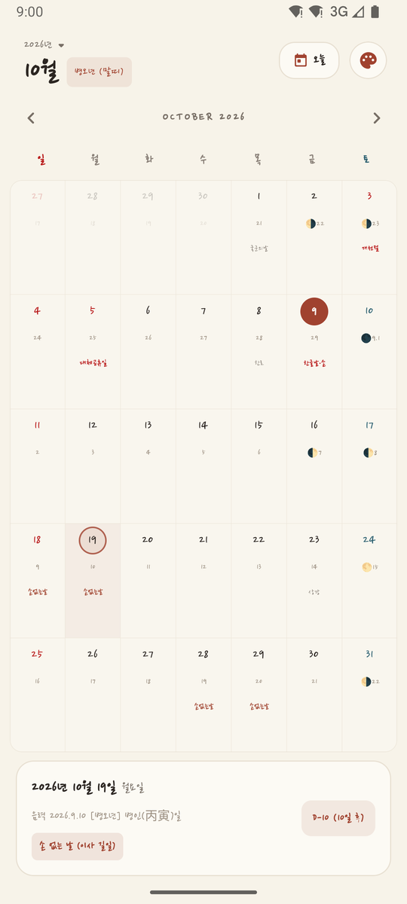
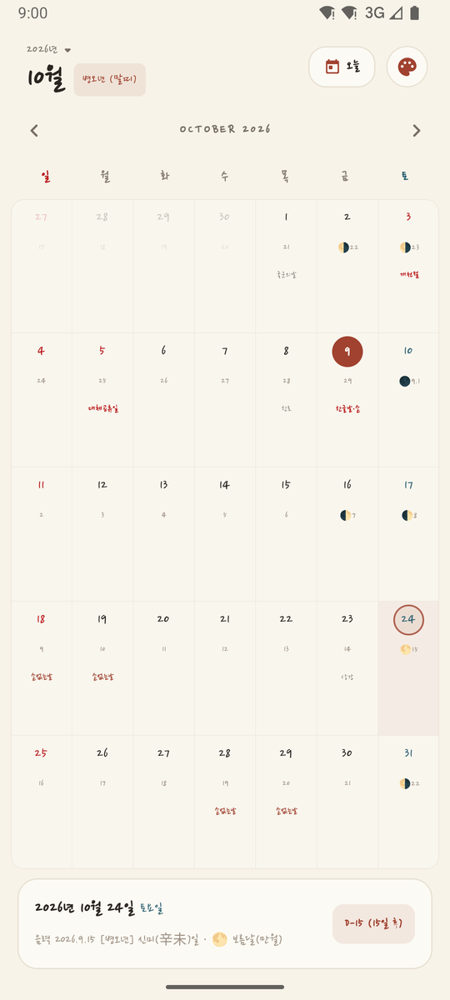
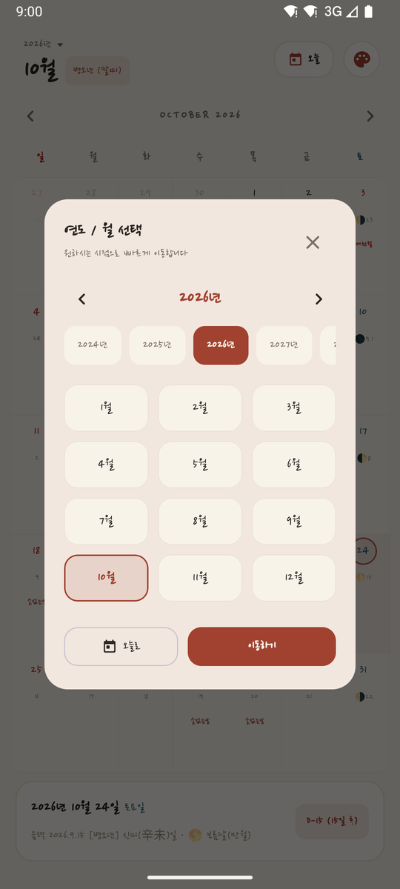
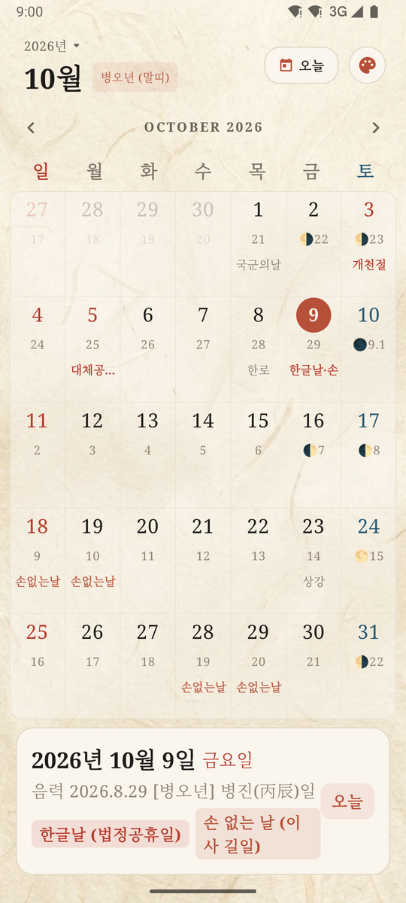
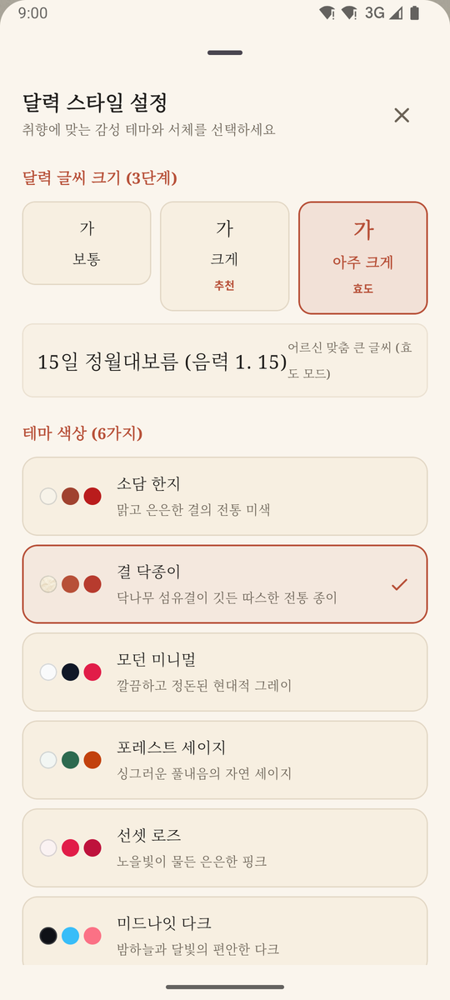
스마트폰을 가로로 돌리면 품격 있는 데스크 인테리어 탁상달력으로 변신합니다.
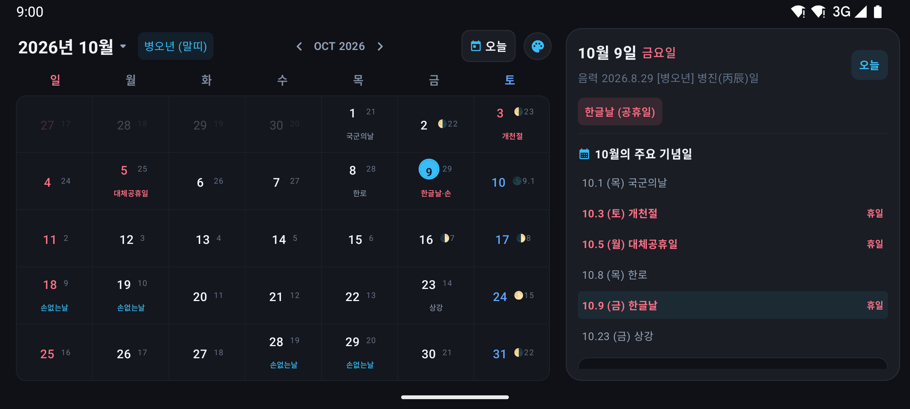
설정에서 '화면 켜짐 유지(Keep Screen On)'를 켜두시면 거치대에 올려두고 공부하거나 업무할 때 꺼지지 않는 시계·달력으로 사용할 수 있습니다.
좌측에는 정갈한 월간 달력, 우측에는 당월의 중요한 기념일과 일정, 24절기 상세 리스트가 넓게 펼쳐져 한눈에 확인할 수 있습니다.
천연 한지 닥종이 질감과 다이어리 손글씨 서체가 어우러져 어떤 데스크 셋업에도 따스하고 우아한 인테리어 포인트가 됩니다.
카드를 좌우로 넘겨 소담달력의 다채로운 화면을 감상해보세요.
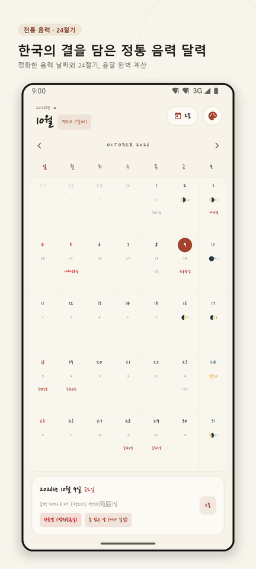
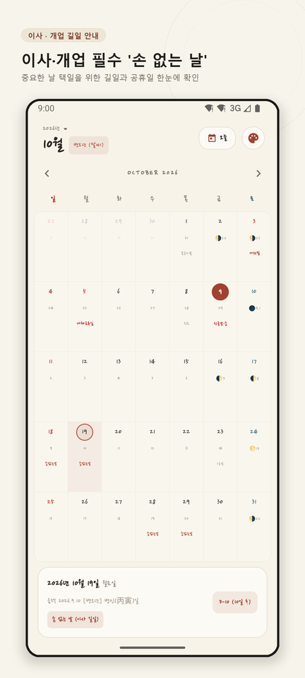
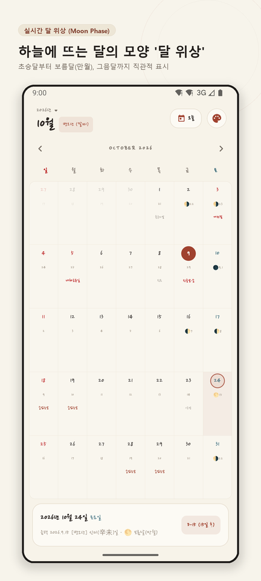
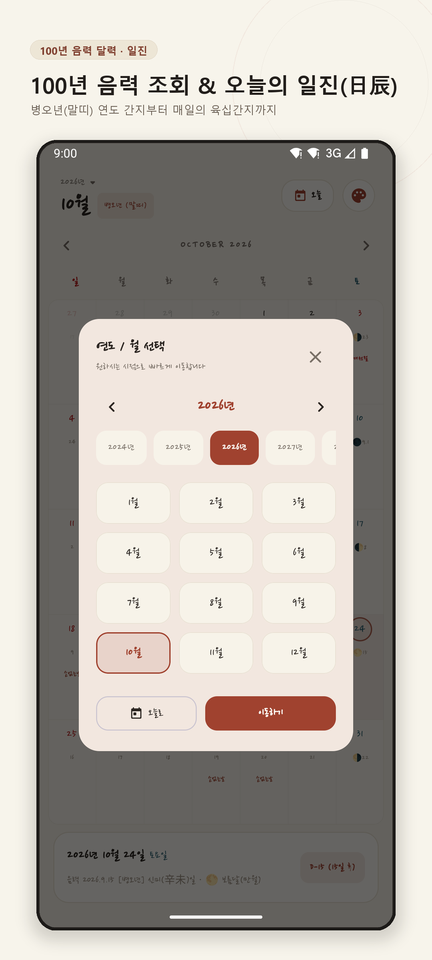
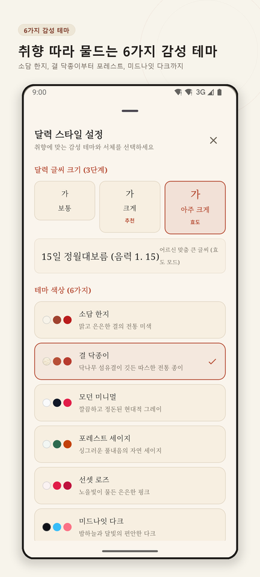
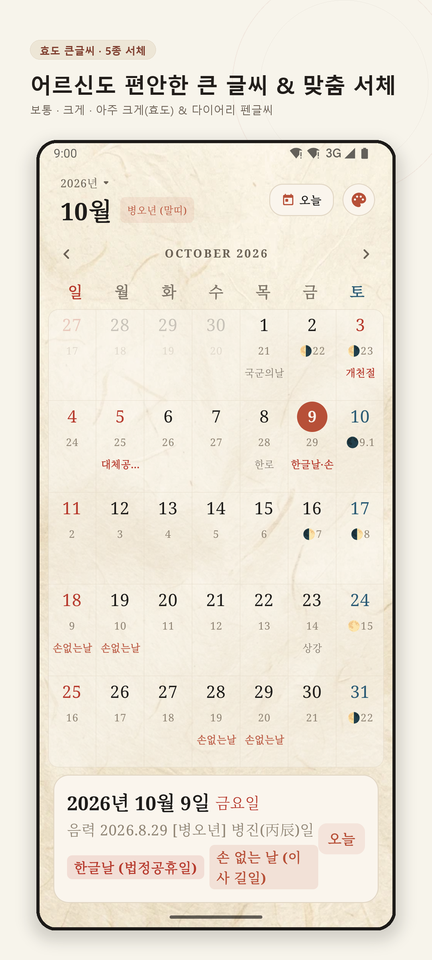
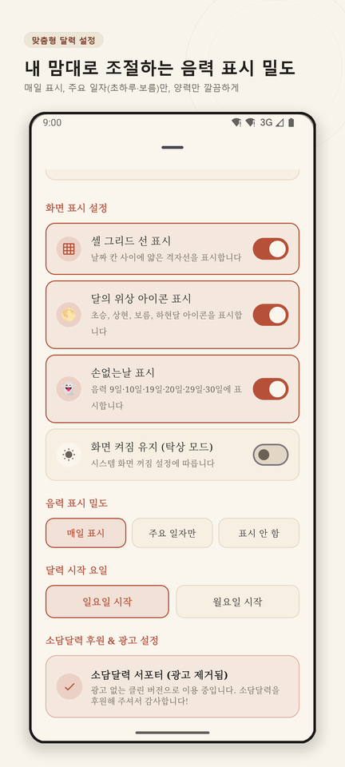
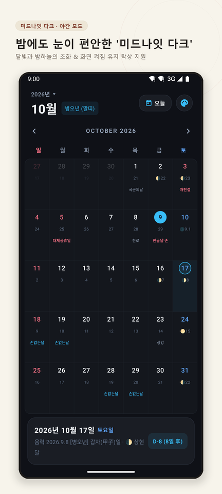
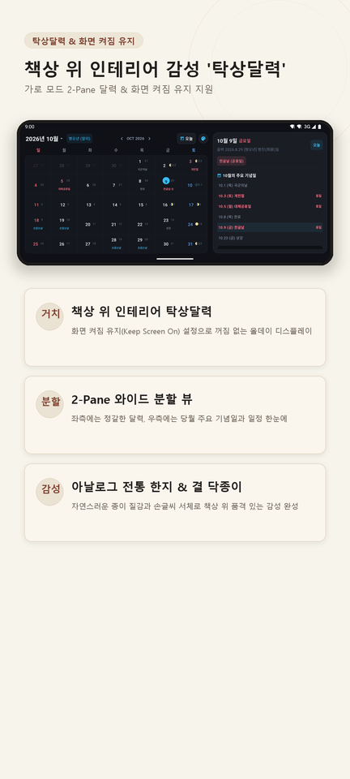
소담달력은 이용자의 사생활을 최우선으로 여깁니다. 별도의 회원가입이나 중앙 서버 없이, 모든 데이터는 이용자의 스마트폰 안에서만 안전하게 보관됩니다.
등록하신 부모님 생신, 제사 일정, 테마 설정은 스마트폰 내부 저장소에만 암호화되어 보관되며 앱 삭제 시 함께 영구 파기됩니다.
주소록, 위치, 통화 기록 등 달력 구동과 무관한 민감 권한을 일절 요구하지 않습니다.
법령을 철저히 준수한 개인정보처리방침을 투명하게 공개하고 상시 안내해 드립니다.
소담달력 사용 중 많은 분들이 궁금해하시는 질문들을 모았습니다.